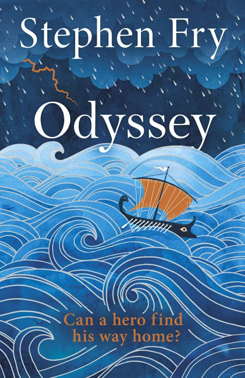
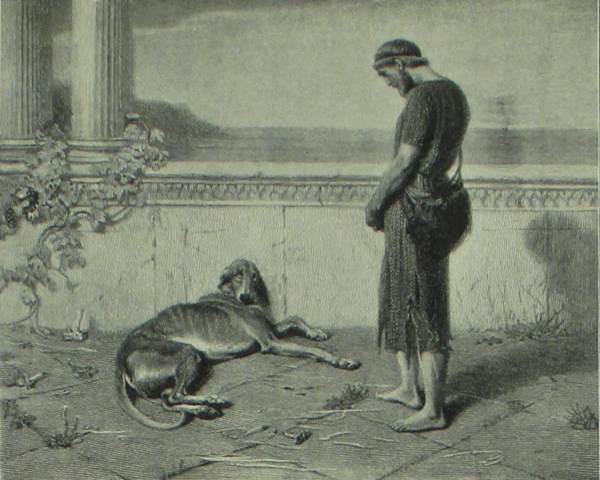
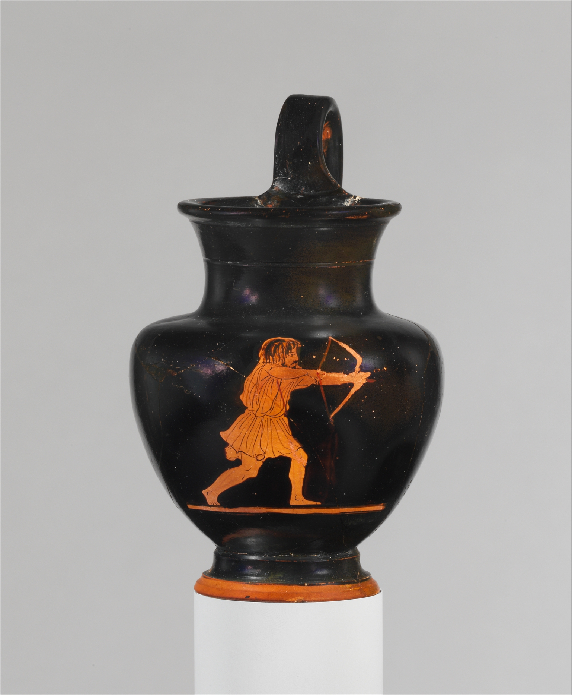
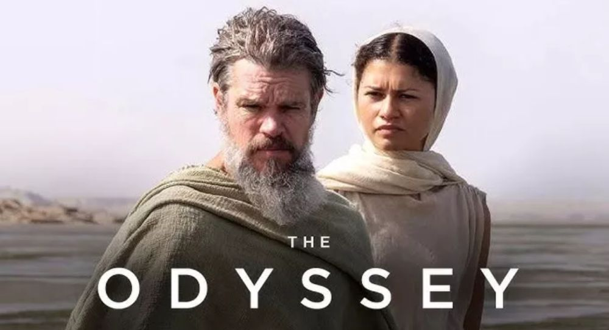

Un clàssic que segueix sent modern
La història de l'Odissea és la continuació de la Iliada. Relata el retorn de l'heroi Odisseu a la seva llar, el regne d'Ítaca. El seu retorn no és un simple recorregut d'un heroi que torna a casa, sinó la història d'un home que malgrat tots els entrebancs que els déus, i altres criatures, li posen aconsegueix tornar a casa al cap de 20 anys. Lloc on l'esperen la seva fidel esposa i el seu fill. L'autor de l'obra és Homer, tradicionalment considerat com a poeta grec, i autor, de la Iliada i l'Odissea. Tanmateix, la seva existència està avui en discutida per diverses corrents d'investagació, ja alguns investigadors creuen que no va existir. Defensen que els dos cants són un recull de de la tradició oral que es va anar passant en generació en generació fins a l'època clàssica, moment en què segurament es van recopilar tot i es van unir en dos llibres. Per últim, l'autor de l'adaptació de l'obra és Stephen Fry, famos actor, comediant i escriptor del Regne Unit. Va nèixer el 24 d'Agost de 1957 a Hampstead, London.

Què és el que m'ha agradat?
Hi ha diferents raons per les quals podria dir que és una bona història. Una d'elles és que el motiu del protagonista de voler tornar a casa és un sentiment universal. A més a més, el fet d'intentar-ho sense rendir-se, encara que tot el teu voltant ho impeideixi, exalta l'empatia del lector. Un segon motiu és que el Odisseu no és perfecte. És un home que mostra tant les seves virtuds com els seus defectes, i que, tot i ser considerat un heroi en època clàssica, segueix sent molt realista. Molt més humà que el els herois de Marvel i similars. I aquesta característica no només es pot observar en ell, sinó també en la resta de caràcters, especialment els déus. Fet que fa que la història sigui més interessant, i fàcil d'imaginar i entendre per persones atees, ja que els deus són molt humans en comparació amb la religió cristiana, musulmana, etc. Per tant, és més fàcil d'entrar en el món de la mitologia clàssica grega. Per últim, crec que és un relat que malgrat tenir milers d'anys, segueix tocant temes que no han canviat avui en dia com són l'amor i la fidelitat per la teva parella. També, la familia, la llar, l'amistat, etc. Per exemple, en la imatge de la dreta es pot observar una representació de quan Odisseu arriba a les portes del seu palau i es retrobar amb el seu gos Argos. Què no hi ha cosa més bonica, i universal, que l'amor incondicional entre una persona i el seu gos?

Per què el recomano?
Animo a llegir-lo perquè crec que és una bona lectura, ja que crec que trenca la barrera mental de que els llibres clàssics, i sobre tot antics, poden ser aburrits i desfats, quan en aquest cas crec que és tot el contrari. De fet, llegint aquest tipus de noveles et fa sentir més propers amb el passat. T'anadones que la gent que va viure abans que tu no era tant diferent a nosaltres. Simplement, van viure en diferents moments. Per acabar, si t'agrada la mitologia grega, i el món clàssic, crec que és un bon punt on començar aprendre, ja que pots observar i entendre una mica millor com eren els grecs.

La pel·lícula
L'estiu passat, Christopher Nolan va portar a les pantalles una adaptació del llibre, que com molt ja sabreu ha estat molt controvertida. Es pot dir que és una pel·lícula que, o t'ha agradat, o no t'ha agradat gens. Des del meu punt de vista, considero que la pel·lícula segueix bastant bé la història original. I aquí alguns direu que Nolan ha canviat coses de la història i que la vestimenta dels soldats no correspon a l'època en què es suposa que succeix la història (coincideixo en que l'armadura d'Agamamnon és ridicula i que és "too much" i només apreix 3 minuts). I, és veritat que l'autor canvia rols de personatges i fa una interpretació diferent de l'Odissea, però no hem d'oblidar que és la seva interpretació d'un relat que ha anat canviant amb el temps i que no pertany a ningú. El contrari, la mitologia grega no és la Biblia, no és un relat hermetic i intocable, el contrari. És un món en què es pot canviar els finals, o les interpretacions, i seguirà estant bé. I això es pot observar només llegint les diferents version que un mateix mite clàssic té.
